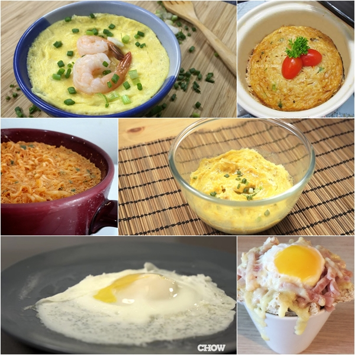

ท่องเที่ยวธรรมชาติ
"ที่เกาะสมุย มันมีอะไร ที่ทำให้คุณนั้นต้องอยากไป"...เชื่อว่าหลายคนคงคุ้นเคยกับเพลง ๆ นี้เป็นอย่างดี และเมื่อพูดถึง "เกาะสมุย" จังหวัดสุราษฎร์ธานี แหล่งท่องเที่ยวสุดฮิตของประเทศไทย ที่มีชื่อเสียงและเป็นที่รู้จักเป็นอย่างดีของนักท่องเที่ยวไทย และชาวต่างชาติ วันนี้เราเลยถือโอกาสดีเข้าไปสำรวจแหล่งท่องเที่ยวที่น่าสนใจบนเกาะนี้มาฝากเพื่อน ๆ กันหลังจากที่เราได้มีโอกาสแวะไปร่วมกิจกรรมท่องเที่ยวกับ การท่องเที่ยวแห่งประเทศไทย (ททท.) เผื่อว่าเพื่อนจะวางแผนไปเที่ยวที่นี่ด้วยทริปง่าย ๆ แบบ 3 วัน 2 คืนกันบ้าง^^
เริ่มต้นทริปนี้ด้วยจุดมุ่งหมายแรก ด้วยการเดินทางไปสักการะพระพุทธรูปที่ใหญ่ที่สุดของภาคใต้กันที่ "วัดพระใหญ่" หรือ "พระพุทธโคดม" ตั้งอยู่บนเกาะฟาน ตั้งอยู่ทางด้านตะวันออกเฉียงเหนือของเกาะสมุย
ลักษณะของพระพุทธรูปโดดเด่น ด้วยสีเหลืองทองตั้งตระหง่านอยู่บนเนินเขาสูง เป็นพระพุทธรูปปางมารวิชัย มีความสูง 12 เมตร สำหรับนักท่องเที่ยวที่เดินทางขึ้นไปกราบสักการะสามารถชมความสวยงามได้ ตั้งแต่ทางขึ้นที่เป็นบันไดประดับด้วยรูปปั้นพญานาค และเมื่อเดินทางขึ้นไปถึงบริเวณองค์พระแล้ว นักท่องเที่ยวสามารถชมวิวหาดบางรัก และหาดบ่อผุด รวมทั้งสามารถมองเห็นเกาะพะงันได้ในมุมสูง อีกทั้งยังเป็นสถานที่ท่องเที่ยวยอดฮิตบนเกาะสมุยที่นักท่องเที่ยวชาวไทยและชาวต่างชาติ ให้ความสนใจและเดินทางขึ้นมากราบไหว้เพื่อความเป็นสิริมงคลอยู่เสมอค่ะ
จากนั้นเดินทางไปอีกไม่ไกลนัก เราก็ไปถึงที่บริเวณจุดชมวิวลาดเกาะ จุดชมวิวความสวยงามของเกาะสมุยที่สวยที่สุด ที่มีการออกแบบพื้นที่จุดชมวิว ให้เป็นสวนสาธารณะปูทางเดินด้วยระเบียงไม้ และจัดที่นั่งใต้ต้นไม้ไว้รับลมชิล ๆ
และอีกส่วนจัดเป็นทางเดิน สำหรับซึ่งนักท่องเที่ยวยังสามารถเดินบนทางลาดลงไปถึงบริเวณโขดหิดที่ตั้งอยู่ติดน้ำทะเลได้ แถมบริเวณนี้ยังเป็นสถานที่ยอดฮิตของคู่บ่าวสาว ที่จะเดินทางมาถ่ายภาพพรีเวดดิ้งอีกด้วย
ที่มา : http://travel.kapook.com/view129827.html
ทำอาหาร

เมนูไข่ไมโครเวฟ 9 สูตรเด็ด สูตรอาหารง่าย ๆ จากไมโครเวฟ เหมาะทำเป็นอาหารเช้าแบบด่วนจี๋เอาใจเด็กหอ หรือมนุษย์คอนโดได้อยู่หมัด ทำง่าย ๆ ประเดี๋ยวเดียวก็อิ่มท้องแล้ว
มื้อเช้าเป็นมื้อที่สำคัญต่อร่างกาย แต่ด้วยเวลาเร่งรีบและไม่สะดวกปรุงทำให้เด็กหอ หรือมนุษย์คอนโดละเลยไป แต่ถ้าหากมีเมนูอาหารง่าย ๆ จากไมโครเวฟมาทำหม่ำแบบด่วนจี๋พออิ่มท้องก็คงจะดีเนอะ วันนี้กระปุกดอทคอมขอนำเสนอ 9 เมนูไข่ไมโครเวฟ แต่ละสูตรทำง่าย มีเพียงไม่กี่ขั้นตอน ใช้เวลาไม่นานก็อิ่มอร่อยได้แบบไม่ต้องไปเรียน หรือไปทำงานสายกันค่ะ อ่านต่อนะค่ะ